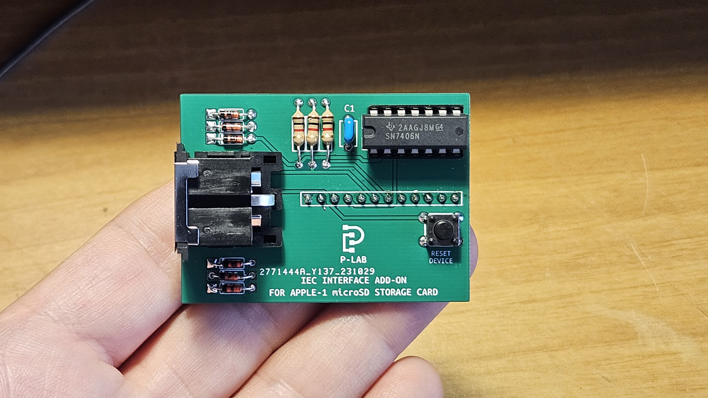
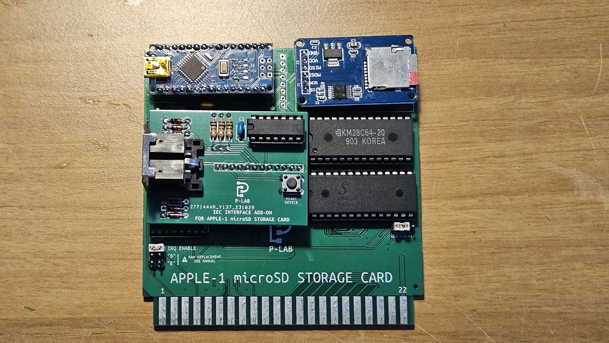

Commodore Floppy Drive Interface (Serial IEC) for Apple-1 and microSD Storage card
 Documents hosted here:
PROJECT DESCRIPTIONProject Description in ITALIAN [pdf]
Project Description in ENGLISH [pdf]
SCHEMATICS & MORE
Schematics [png]
PCB [Gerber/zip]
Bill of Materials [txt]
COMPATIBILITY
Floppy Drives & Devices compatibility list [txt]
PARENT PROJECT
Apple-1 microSD Storage Card [GitHub/html]
--- Direct link to SD CARD OS firmware download page [html]
--- Note: To have the HELP on the new commands download the updated SD archive and replace the /HELP directory.
External links:
Official Video [YouTube]This work is licensed under CC BY 4.0